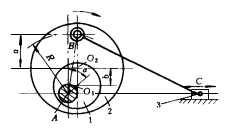
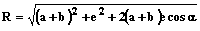
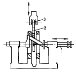
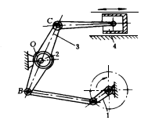

机构示意图
机构特性简介
偏心轮式调节曲柄长机构

主动盘上的曲柄AB绕A轴转动，通过连杆BC带动滑块3作往复移动。曲柄AB长度R可用圆盘2内的偏心轮1来调节。调节R时，将偏心轮1绕A转动α角后加以固定，R按下式计算：

斜轴式偏心调节机构

凸轮2用滑键安装在轴1的倾斜轴颈上，当轴1在它的轴向移动一定距离时，改变了凸轮2在倾斜轴颈上的相对位置，即改变了凸轮的偏心距，从而改变滚子从动件3的行程。
偏心轮式调节摇杆长机构

当曲柄1作主动件回转时，通过摇杆3带动活塞4作往复移动。调节时，将偏心轮2绕固定轴O转动，可改变摇杆3的DC、OB长度及其摆角，达到调节活塞4行程的要求。